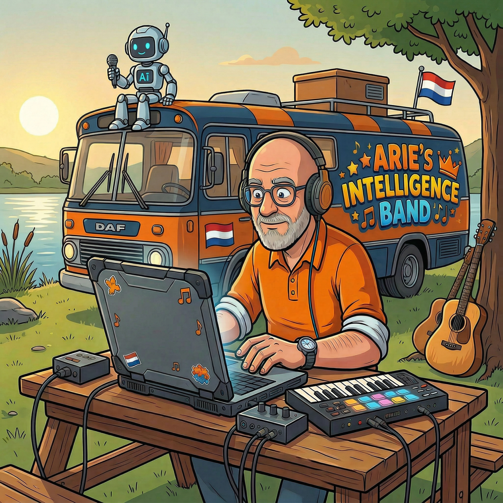
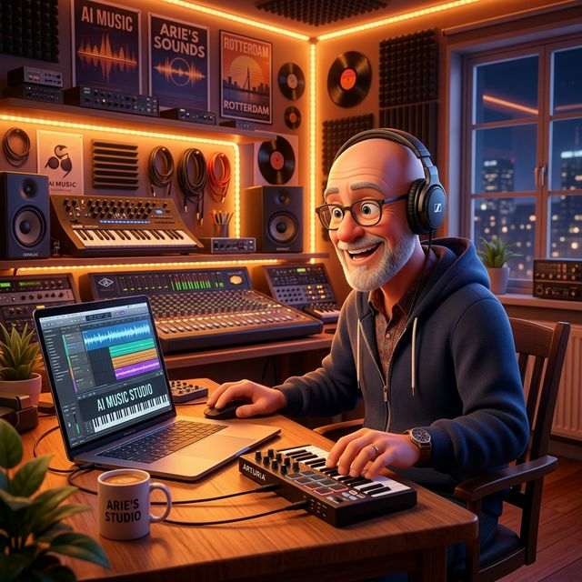

NIEUW
Van meeslepende Nederlandstalige hits tot waanzinnige Oranje knallers voor het EK en WK. Arie maakt muziek met een ziel, gedreven door geavanceerde Artificial Intelligence.

Arie Intelligence (geboren in 1962) heeft door verschillende life events een nieuwe kijk op het leven gekregen. Hij besloot met pensioen te gaan, kocht een camper en trekt inmiddels de wijde wereld in. Deze vrijheid heeft zijn creativiteit volledig aangewakkerd, wat hij nu met passie vertaalt naar muziek.
Tegenwoordig is hij dé virtuele maestro achter jouw favoriete hits: van ontroerende meezingers tot ultieme Oranje-knallers. Samen met de virtuele Arie Intelligence Band en de modernste AI-technologie is zijn missie onveranderd: muziek maken die raakt, verbindt en elk feest onvergetelijk maakt.
AI Gedreven
Oranje Knallers
In de Studio

Achter elke noot zit een mens. AI is het instrument — de bezieling komt van het gevoel, de levenservaring en de Nederlandse ziel die Arie erin legt. Daarom raakt het ook écht.
Het verhaal, de emotie en het idee achter elk nummer wordt door Arie zelf bedacht en vormgegeven.
Arrangement, productie en mix krijgen via AI een professionele finish die anders maanden werk zou kosten.
Mens en AI maken samen wat alleen niet kon — toegankelijk, raak en altijd Nederlandstalig.
Vers van Arie's virtuele studio. Scroll erdoorheen, klik op een track en tune in.
Ontdek hoe Arie de brug slaat tussen pure passie en geavanceerde technologie.
Perfecte AI-muziek is zeker geen farce. Het is een echte en snel evoluerende technologie die steeds vaker wordt gebruikt in de professionele muziekwereld. AI kan enorm helpen bij het componeren, produceren en zelfs uitvoeren van muziek van topkwaliteit.
Nee, helemaal niet. Hoewel sommige mensen twijfelen aan de artistieke waarde van door AI gecreëerde muziek, biedt AI juist nieuwe creatieve mogelijkheden. Het is een krachtig innovatief hulpmiddel bedoeld om muzikanten te inspireren en te ondersteunen, en juist om de menselijke creativiteit aan te vullen.
AI fungeert als een tool in de hedendaagse muziekproductie, en net als bij ambachtelijk geproduceerde muziek blijft de uiteindelijke beleving mensenwerk. Natuurlijk blijft de subjectieve kwaliteit en smaak een belangrijke rol spelen in hoe we met z'n allen deze muziek waarderen. Voor Arie staat voorop dat het raakt, swingt, en van het scherm spat!
Op Spotify, YouTube en TikTok. Op deze website staan altijd de nieuwste releases met directe Spotify-links — scroll naar de muziek-sectie en klik op een track om hem inline af te spelen.
Klaar om de volgende hit te maken? Neem contact op met het management van Arie Intelligence.